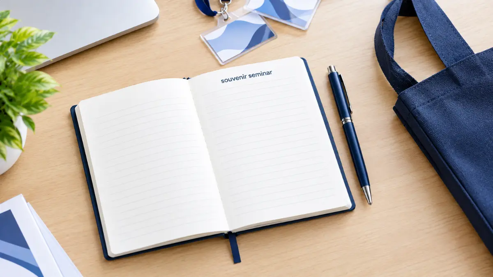

Inspirasi Paket Souvenir Seminar Perusahaan Samarinda

Souvenir Kantor Jakarta - Souvenir seminar Samarinda dapat dikemas sebagai seminar kit berisi notebook, pulpen, tote bag, tumbler, atau produk corporate merchandise lainnya, dengan paket yang disesuaikan dengan konsep acara dan jumlah peserta.
Souvenir seminar Samarinda umumnya dikemas dalam bentuk seminar kit praktis untuk menjangkau banyak peserta. Notebook, pulpen, dan tote bag menjadi kombinasi paling umum dalam seminar kit yang efektif dan fungsional.
Paket seminar kit dapat disusun mulai dari versi basic hingga premium sesuai skala agenda perusahaan. Custom logo pada seminar kit membantu memperkuat identitas acara perusahaan bersama vendor terpercaya Souvenir Kantor Jakarta.
- Souvenir Seminar Perusahaan di Samarinda
- Seminar Internal Perusahaan
- Seminar untuk Klien dan Partner
- Seminar dengan Peserta Umum
- Apa Saja Produk Souvenir Seminar Samarinda?
- Bagaimana Paket Seminar Kit Perusahaan Disusun?
- 1. Paket Seminar Basic
- 2. Paket Seminar Standard
- 3. Paket Seminar Corporate
- 4. Paket Seminar Premium
- Bagaimana Souvenir Seminar Disesuaikan dengan Jumlah Peserta?
- Seminar dengan Peserta Terbatas
- Seminar dengan Peserta Menengah
- Seminar dengan Peserta dalam Jumlah Besar
- Pesan Souvenir Seminar untuk Kebutuhan Perusahaan di Samarinda
- Kesimpulan
- FAQ Seputar Souvenir Seminar Samarinda
Souvenir Seminar Perusahaan di Samarinda
Souvenir seminar digunakan pada berbagai jenis acara perusahaan di Samarinda, mulai dari pelatihan internal hingga seminar besar yang melibatkan peserta dari luar perusahaan.
Seminar Internal Perusahaan
Untuk training karyawan, program employee development, atau workshop internal divisi, souvenir biasanya berfokus pada kelengkapan mencatat materi penting, seperti notebook eksklusif dan pulpen ergonomis.
Seminar untuk Klien dan Partner
Souvenir pada seminar jenis ini umumnya membawa identitas perusahaan secara lebih profesional, mengingat pesertanya berasal dari pihak eksternal, klien potensial, maupun mitra industri strategis.
Seminar dengan Peserta Umum
Produk yang dipilih perlu praktis digunakan peserta sekaligus memiliki area branding yang luas dan mudah terlihat saat dibawa bepergian, seperti tote bag kanvas atau tumbler minum.

Apa Saja Produk Souvenir Seminar Samarinda?
Produk souvenir seminar yang umum digunakan meliputi notebook, pulpen, tote bag, tumbler, power bank, dan pouch, dipilih berdasarkan fungsi dan kepraktisan distribusi ke banyak peserta:
| Produk | Fungsi dalam Seminar | Cocok untuk |
|---|---|---|
| Notebook | Mencatat materi seminar | Semua peserta |
| Pulpen | Perlengkapan alat tulis seminar | Seminar massal |
| Tote bag | Wadah membawa paket seminar kit | Seminar & workshop |
| Tumbler | Merchandise minuman ramah lingkungan | Corporate seminar |
| Power bank | Gift premium pengisi daya perangkat | Peserta VIP |
| Pouch | Pelengkap kit penyimpanan barang kecil | Corporate event |
Bagaimana Paket Seminar Kit Perusahaan Disusun?
Paket seminar kit perusahaan biasanya disusun bertingkat, mulai dari kombinasi basic seperti notebook dan pulpen, hingga paket premium dengan packaging khusus:
1. Paket Seminar Basic
Terdiri dari notebook custom logo dan pulpen sebagai kelengkapan dasar mencatat materi seminar bagi peserta workshop.
2. Paket Seminar Standard
Menambahkan tote bag spunbond atau kanvas pada kombinasi notebook dan pulpen agar peserta lebih mudah membawa seluruh dokumen serta souvenir seminar kit.
3. Paket Seminar Corporate
Kombinasi notebook, pulpen metal, tumbler stainless, dan tote bag kanvas umumnya dipilih untuk seminar berskala korporat demi menghadirkan citra brand yang solid.
4. Paket Seminar Premium
Menggunakan gift box hardboard eksklusif dengan kombinasi corporate merchandise lengkap seperti power bank, tumbler vacuum, dan pulpen grafir, biasanya diperuntukkan bagi narasumber, pembicara, atau tamu VIP.
Bagaimana Souvenir Seminar Disesuaikan dengan Jumlah Peserta?
Souvenir seminar disesuaikan dengan jumlah peserta melalui pemilihan produk yang efisien diproduksi dan didistribusikan dalam skala tertentu, tanpa mengurangi elemen branding perusahaan:
Seminar dengan Peserta Terbatas
Paket dapat disusun lebih personal dan bernilai premium karena jumlah penerima relatif sedikit, misalnya fokus pada gift set berkualitas tinggi.
Seminar dengan Peserta Menengah
Seminar kit standar (tote bag + notebook + pulpen) umumnya dipilih agar mudah didistribusikan sekaligus tetap membawa kesan corporate yang kuat.
Seminar dengan Peserta dalam Jumlah Besar
Komponen dalam paket biasanya dibuat lebih efisien dari sisi biaya produksi dan bobot kemasan, namun tetap mempertahankan ketajaman elemen branding logo perusahaan pada setiap item produk.
Pesan Souvenir Seminar untuk Kebutuhan Perusahaan di Samarinda
Untuk kebutuhan seminar perusahaan di Samarinda, Souvenir Kantor Jakarta menyediakan berbagai pilihan seminar kit dan corporate merchandise yang dapat disesuaikan dengan tema acara dan budget yang tersedia.
Lihat katalog souvenir seminar dan konsultasikan kebutuhan jumlah peserta, jenis produk, serta custom branding logo bersama tim Souvenir Kantor Jakarta.
Pesan Seminar Kit & Souvenir Seminar Samarinda
Souvenir Kantor Jakarta menyediakan paket seminar kit lengkap, goodie bag, dan merchandise corporate custom logo untuk seminar, workshop, dan pelatihan perusahaan di Samarinda.
Chat WhatsApp SekarangKesimpulan
Souvenir seminar Samarinda umumnya dikemas dalam bentuk seminar kit yang praktis sekaligus membawa identitas perusahaan melalui custom logo. Pemilihan paket dapat disesuaikan dengan jenis seminar dan jumlah peserta, mulai dari paket basic hingga paket premium untuk tamu tertentu.